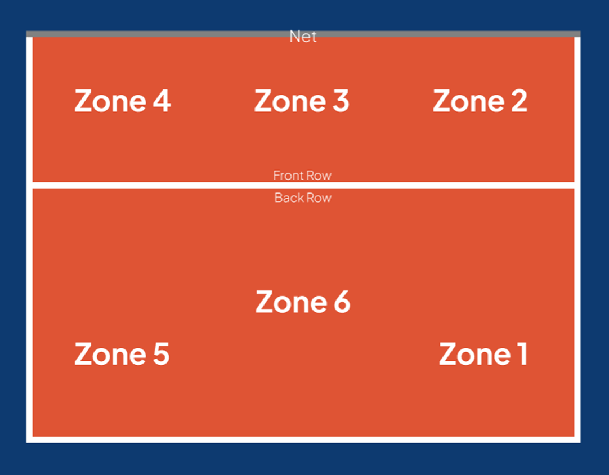
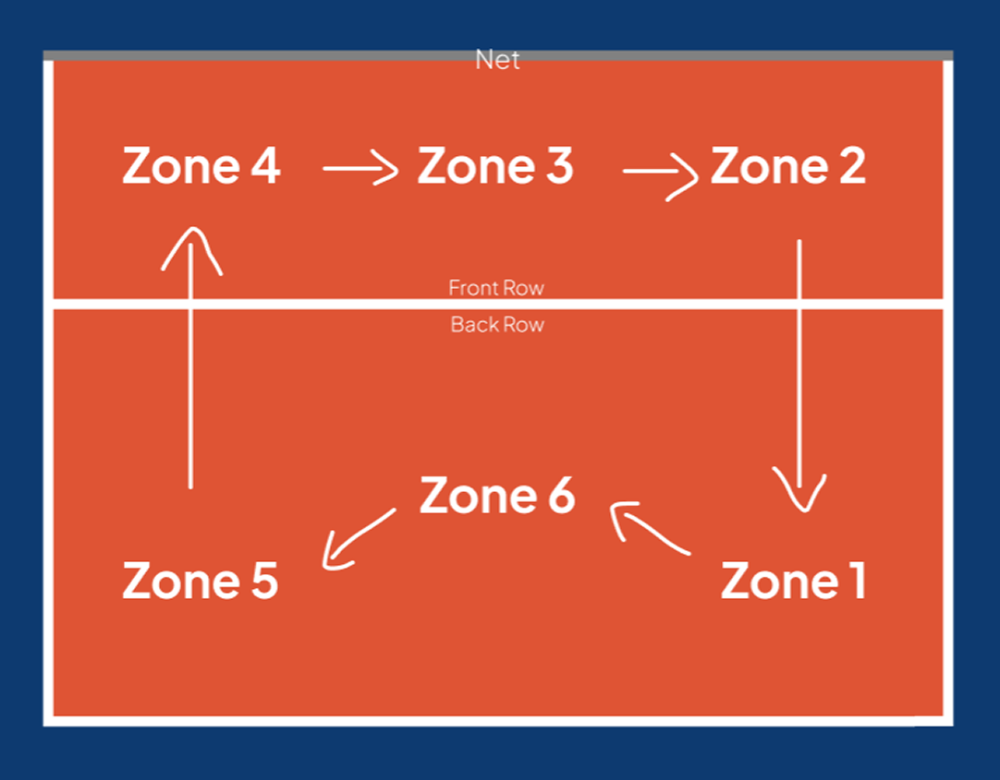

Front Row (Zones 2, 3, 4): Players jump at the net to attack and block spikes.
Positions & Rotation
Understanding the Court

The volleyball court is divided into two halves, and each half has 6 numbered zones.
Zones are numbered from 1 to 6 in a counter-clockwise circle :
- Zone 1: Back right corner (this is where the serve is taken).
- Zone 2: Front right corner.
- Zone 3: Front center (right at the net).
- Zone 4: Front left corner.
- Zone 5: Back left corner.
- Zone 6: Back center (middle defense).
Front Row vs. Back Row:
Back Row (Zones 1, 5, 6): Players focus on digging, passing serves, and keeping the ball off the floor.
Why Does Everyone Move?

When Do You Rotate
Your team only rotates when you WIN the serve back from the other team. If your team is already serving and wins a point, nobody moves.
Which Direction
All six players move ONE spot CLOCKWISE :
- Zone 2 moves to Zone 1.
- Zone 1 moves to Zone 6.
- Zone 6 moves to Zone 5.
- Zone 5 moves to Zone 4.
- Zone 4 moves to Zone 3.
- Zone 3 moves to Zone 2.
Who Does What on the Team?
| Role | Description |
|---|---|
| 1. Setter (The Playmaker) |
The brain of the offense. The setter takes the second touch and passes high in the air so attackers can spike it. |
| 2. Outside Hitter (Left Wing) |
Plays on the front-left (Zone 4). They hit powerful spikes and help pass incoming serves. |
| 3. Middle Blocker (The Wall) |
Plays in the center (Zone 3). They jump to block opponent hits and attack quick balls at the net. When they rotate to the back row, they switch with the Libero. |
| 4. Opposite Hitter (Scoring Machine) |
Plays on the right side across from the setter. They are usually the team's heaviest attacker from both the front and back row. |
| 5. Libero (Defense Specialist) |
Wears a different colored jersey. The libero only plays in the back row, cannot block or attack above the net, and focuses 100% on digging fast spikes. |
What Are You Allowed to Do?
Rule 1 (The Serve Moment):
You must stand in your correct rotational spot ONLY at the exact second the ball is served. As soon as the server hits the ball, you can run to your favorite spot on the court.
Rule 2 (The 3-Meter Attack Line):
Back-row players cannot jump from in front of the 3-meter line to spike a ball above the net, and they cannot block at the net.